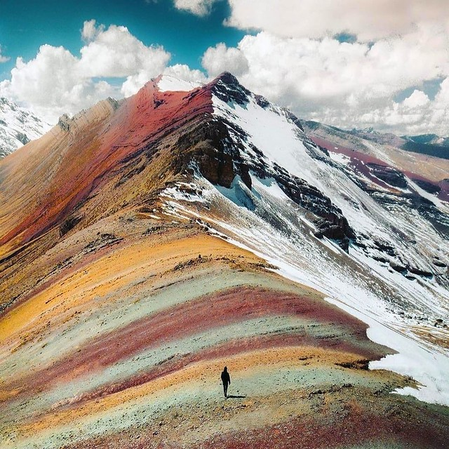

Cerro de los Siete Colores
Escrito el: 08/11/2022por: Darío Jhenner Chávez Cusi
⭐⭐⭐⭐⭐
El Macizo de los Siete Colores es un cerro ubicado en las afueras de
la ciudad de Purmamarca sobre la Ruta Nacional 52 que se dirige al
Paso de Jama, a 4 kilómetros de la Ruta Nacional 9 en la provincia
de Jujuy.
El precio de la entrada es de 10 soles para extranjeros (unos 3€)
y 5 soles para peruanos. Para ver el Valle rojo se paga una
entrada extra que cuesta 10 soles.